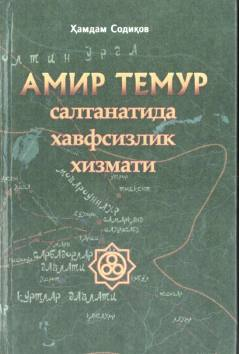

ATAmir Temur saltanatida davlat xavfsizligi va razvedka tizimi tarixi haqida tarixiy badia.
Ushbu kitob buyuk sarkarda Amir Temurning davlat хаvfsizligini ta'minlashdagi muhim omil — razvedka va kontrrazvedka sohasida olib borgan siyosati hamda jangovar faoliyatiga bag'ishlangan. Asarda tarixiy faktlar va voqealar asosida Sohibqironning davlat barpo etishdagi xavfsizlik xizmatining tutgan o'rni yoritib berilgan. Kitob keng kitobxonlar ommasiga mo'ljallangan.